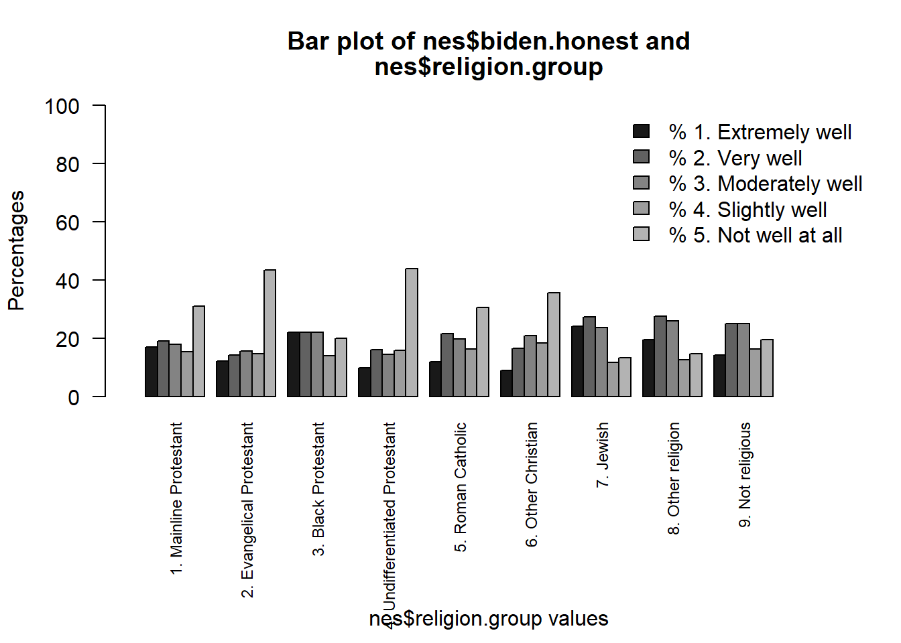
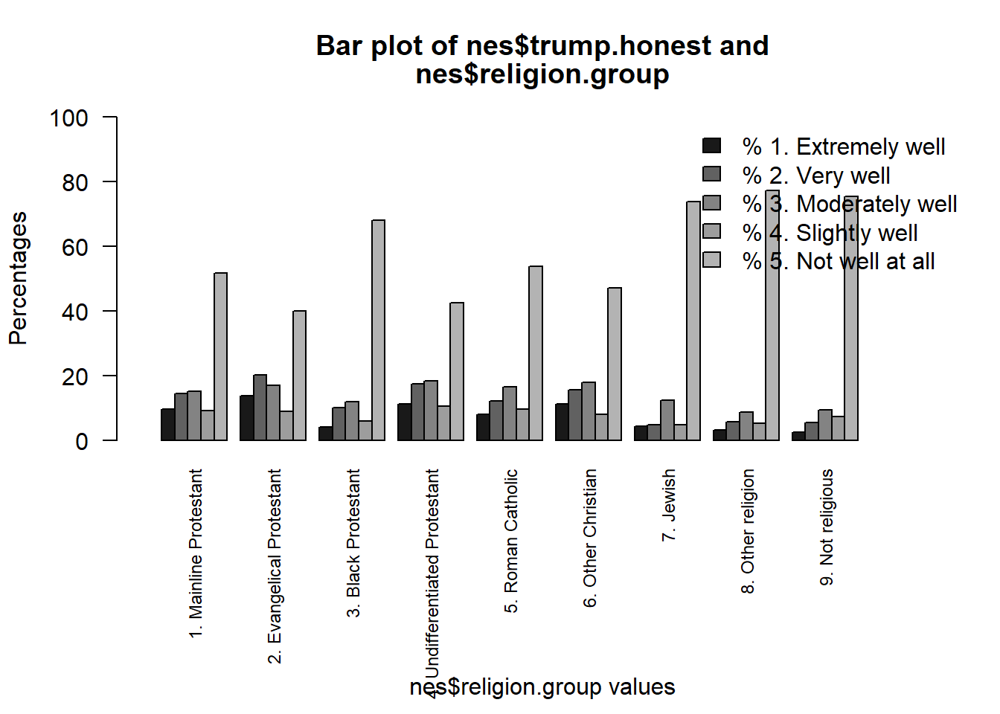

# install.packages("oii")Chi-Square (and Measures of Association)
Agenda:
1. Install Packages and Libraries:
New packages to install:
If you do not already have these packages, paste them manually into the console and install them.
- oii provides additional tests for categorical data in crosstabs.
Load libraries!
library(RCPA3)
library(oii)2. Remember: crosstabC() with the chisq=T Argument
crosstabC(dv=nes$biden.honest, iv=nes$religion.group, compact=T, plot.response = "all", chisq = T)===========================================================================
Cross-Tabulation Analysis
===========================================================================
Table: Cross-Tabulation of nes$biden.honest and nes$religion.group
1. Mainline Protestant 2. Evangelical Protestant 3. Black Protestant 4. Undifferentiated Protestant 5. Roman Catholic 6. Other Christian 7. Jewish 8. Other religion 9. Not religious Totals
--------------------- ----------------------- -------------------------- -------------------- ------------------------------- ------------------ ------------------- ---------- ------------------ ----------------- --------
% 1. Extremely well 16.97 12.20 22.00 9.78 11.85 8.85 24.06 19.38 14.31 13.27
% 2. Very well 18.95 14.26 22.00 15.99 21.56 16.54 27.27 27.50 24.93 20.04
% 3. Moderately well 17.92 15.48 22.00 14.44 19.79 20.87 23.53 25.94 24.99 20.03
% 4. Slightly well 15.25 14.57 14.00 15.84 16.37 18.27 11.76 12.50 16.32 15.84
% 5. Not well at all 30.92 43.48 20.00 43.94 30.42 35.48 13.37 14.69 19.45 30.83
Count 1161.00 1311.00 50.00 644.00 1637.00 1040.00 187.00 320.00 1789.00 8139.00
---------------------------------------------------------------------------
Chi-Squared Test of Independence
---------------------------------------------------------------------------
Null hypothesis: nes$biden.honest and nes$religion.group are independent.
Pearson's Chi-squared test
data: crosstab.observed.frequencies
X-squared = 437.4, df = 32, p-value < 2.2e-16Adjusting plot configuration to fit labels. Consider modifying column labels with ivlabs argument.
There is a significant relationship between R’s religious group and the extent to which R believes that the trait “honest” describes President Biden.
crosstabC(dv=nes$trump.honest, iv=nes$religion.group, compact=T, plot.response = "all", chisq = T)===========================================================================
Cross-Tabulation Analysis
===========================================================================
Table: Cross-Tabulation of nes$trump.honest and nes$religion.group
1. Mainline Protestant 2. Evangelical Protestant 3. Black Protestant 4. Undifferentiated Protestant 5. Roman Catholic 6. Other Christian 7. Jewish 8. Other religion 9. Not religious Totals
--------------------- ----------------------- -------------------------- -------------------- ------------------------------- ------------------ ------------------- ---------- ------------------ ----------------- --------
% 1. Extremely well 9.64 13.85 4.00 11.28 8.10 11.32 4.28 3.12 2.51 8.38
% 2. Very well 14.37 20.24 10.00 17.47 12.12 15.64 4.81 5.62 5.42 12.72
% 3. Moderately well 15.23 16.97 12.00 18.24 16.44 17.85 12.30 8.75 9.44 14.72
% 4. Slightly well 9.12 8.98 6.00 10.51 9.50 8.06 4.81 5.31 7.32 8.49
% 5. Not well at all 51.64 39.95 68.00 42.50 53.84 47.12 73.80 77.19 75.31 55.70
Count 1162.00 1314.00 50.00 647.00 1642.00 1042.00 187.00 320.00 1790.00 8154.00
---------------------------------------------------------------------------
Chi-Squared Test of Independence
---------------------------------------------------------------------------
Null hypothesis: nes$trump.honest and nes$religion.group are independent.
Pearson's Chi-squared test
data: crosstab.observed.frequencies
X-squared = 671.36, df = 32, p-value < 2.2e-16
Note: Chi-Square Test results may be incorrect. At least one expected frequency is less than 5.Adjusting plot configuration to fit labels. Consider modifying column labels with ivlabs argument.
There is also a significant relationship between R’s religious group and the extent to which R believes that the trait “honest” describes President Trump.
BUT the crosstab outputs and the bar charts are, like, a lot to process…
What if we just wanted to look at one or two specific groups as dummy variables?
3. Application: Making Dummies Using the ifelse() Function
Let’s make a variable called “evangelical” to be 1 if nes$religion.group is “2. Evangelical Protestant”:
evangelical<- ifelse(test = nes$religion.group=="2. Evangelical Protestant", "Evangelical", "Not Evangelical")evangelical<- as.factor(evangelical) # convert evangelical to a factor to make sure R treats it rightLet’s make another variable called “catholic” to be 1 if nes$religion.group is “5. Roman Catholic”
catholic<- ifelse(test = nes$religion.group=="5. Roman Catholic", "Catholic", "Not Catholic")catholic<- as.factor(catholic) # quick conversion to a factor variable...Now, we can run some crosstabs with chi-square! Let’s skip the plots.
crosstabC(dv=nes$biden.honest, iv=evangelical, compact=T, chisq = T, plot = F)===========================================================================
Cross-Tabulation Analysis
===========================================================================
Table: Cross-Tabulation of nes$biden.honest and evangelical
Evangelical Not Evangelical Totals
--------------------- ------------ ---------------- --------
% 1. Extremely well 12.20 13.47 13.27
% 2. Very well 14.26 21.15 20.04
% 3. Moderately well 15.48 20.90 20.03
% 4. Slightly well 14.57 16.08 15.84
% 5. Not well at all 43.48 28.40 30.83
Count 1311.00 6828.00 8139.00
---------------------------------------------------------------------------
Chi-Squared Test of Independence
---------------------------------------------------------------------------
Null hypothesis: nes$biden.honest and evangelical are independent.
Pearson's Chi-squared test
data: crosstab.observed.frequencies
X-squared = 126.17, df = 4, p-value < 2.2e-16Do Evangelicals think Biden is honest? Evangelicals are less likely to think Biden is honest (and it’s significant).
crosstabC(dv=nes$trump.honest, iv=evangelical, compact=T, chisq = T, plot = F)===========================================================================
Cross-Tabulation Analysis
===========================================================================
Table: Cross-Tabulation of nes$trump.honest and evangelical
Evangelical Not Evangelical Totals
--------------------- ------------ ---------------- --------
% 1. Extremely well 13.85 7.32 8.38
% 2. Very well 20.24 11.27 12.72
% 3. Moderately well 16.97 14.28 14.72
% 4. Slightly well 8.98 8.39 8.49
% 5. Not well at all 39.95 58.73 55.70
Count 1314.00 6840.00 8154.00
---------------------------------------------------------------------------
Chi-Squared Test of Independence
---------------------------------------------------------------------------
Null hypothesis: nes$trump.honest and evangelical are independent.
Pearson's Chi-squared test
data: crosstab.observed.frequencies
X-squared = 201.41, df = 4, p-value < 2.2e-16What about Trump? Evangelicals are more likely to think Trump is honest (and it’s significant).
crosstabC(dv=nes$biden.honest, iv=catholic, compact=T, chisq = T, plot = F)===========================================================================
Cross-Tabulation Analysis
===========================================================================
Table: Cross-Tabulation of nes$biden.honest and catholic
Catholic Not Catholic Totals
--------------------- --------- ------------- --------
% 1. Extremely well 11.85 13.63 13.27
% 2. Very well 21.56 19.66 20.04
% 3. Moderately well 19.79 20.09 20.03
% 4. Slightly well 16.37 15.70 15.84
% 5. Not well at all 30.42 30.93 30.83
Count 1637.00 6502.00 8139.00
---------------------------------------------------------------------------
Chi-Squared Test of Independence
---------------------------------------------------------------------------
Null hypothesis: nes$biden.honest and catholic are independent.
Pearson's Chi-squared test
data: crosstab.observed.frequencies
X-squared = 6.0185, df = 4, p-value = 0.1978Do Catholics have the same patterns? Not likely. The relationship between being Catholic or not and the extent to which the word “honest” describes Biden is not significant.
crosstabC(dv=nes$trump.honest, iv=catholic, compact=T, chisq = T, plot = F)===========================================================================
Cross-Tabulation Analysis
===========================================================================
Table: Cross-Tabulation of nes$trump.honest and catholic
Catholic Not Catholic Totals
--------------------- --------- ------------- --------
% 1. Extremely well 8.10 8.45 8.38
% 2. Very well 12.12 12.87 12.72
% 3. Moderately well 16.44 14.28 14.72
% 4. Slightly well 9.50 8.23 8.49
% 5. Not well at all 53.84 56.17 55.70
Count 1642.00 6512.00 8154.00
---------------------------------------------------------------------------
Chi-Squared Test of Independence
---------------------------------------------------------------------------
Null hypothesis: nes$trump.honest and catholic are independent.
Pearson's Chi-squared test
data: crosstab.observed.frequencies
X-squared = 8.7074, df = 4, p-value = 0.06884But maybe Catholicism influences belief that Trump is honest? Nah. Still not a significant relationship.
4. Adding Measures of Association Tests
crosstabC(dv=nes$biden.honest, iv=evangelical, compact=T, chisq = T, plot = F, lambda = T, somers = T, cramers = T)===========================================================================
Cross-Tabulation Analysis
===========================================================================
Table: Cross-Tabulation of nes$biden.honest and evangelical
Evangelical Not Evangelical Totals
--------------------- ------------ ---------------- --------
% 1. Extremely well 12.20 13.47 13.27
% 2. Very well 14.26 21.15 20.04
% 3. Moderately well 15.48 20.90 20.03
% 4. Slightly well 14.57 16.08 15.84
% 5. Not well at all 43.48 28.40 30.83
Count 1311.00 6828.00 8139.00
---------------------------------------------------------------------------
Chi-Squared Test of Independence
---------------------------------------------------------------------------
Null hypothesis: nes$biden.honest and evangelical are independent.
Pearson's Chi-squared test
data: crosstab.observed.frequencies
X-squared = 126.17, df = 4, p-value < 2.2e-16
---------------------------------------------------------------------------
Lambda Measure of Association
---------------------------------------------------------------------------
Table: Lambda Measure of Association
Naive Errors Prediction Errors Lambda
------------- ------------------ -------
5630.00 5630.00 0.00
---------------------------------------------------------------------------
Somers' dyx Measure of Association
---------------------------------------------------------------------------
Somers' dyx
-0.16
---------------------------------------------------------------------------
Cramer's V Measure of Association
---------------------------------------------------------------------------
Cramer's V
0.12 We can add measures of association for Somers’ d, Cramer’s V, and Lambda (\(\lambda\)) directly to our crosstabC() chi-square test.
But we’re missing some important measures (Gamma and Tau-b)!
Using the oii Package
association.measures(y=nes$biden.honest, x=evangelical)Chi-square-based measures of association:
Phi: 0.125
Contingency coefficient: 0.124
Cramer's V: 0.125
Ordinal measures of association:
Total number of pairs: 33117591
Concordant pairs: 2766908 ( 8.35 %)
Discordant pairs: 4162743 ( 12.57 %)
Tied on first variable: 18971978 ( 57.29 %)
Tied on second variable: 2021857 ( 6.11 %)
Tied on both variables: 5194105 ( 15.68 %)
Goodman-Kruskal Gamma: -0.201
Somers' d (col dep.): -0.156
Kendall's tau-b: -0.092
Stuart's tau-c: -0.084 Now we can test the other measures of association between the variables in our crosstabC() chi-square model.
But we have to be careful to specify x (the IV) and y (the DV) because some measures are asymmetrical!
Note: the oii measures of association don’t include lambda. I’m okay with it because lambda is mid at best, anyway.